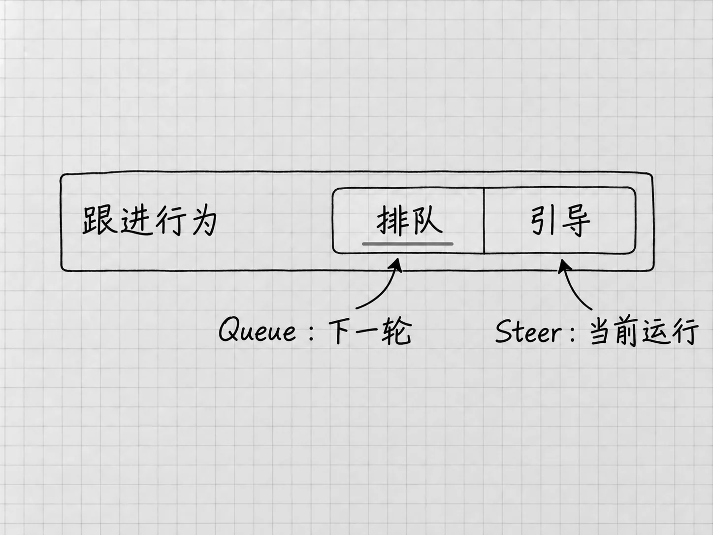

第8章 看懂运行过程：补充、排队、停止和继续
Codex迟迟没有给出最后一段回复，可能是还在读材料、调用工具，也可能是已经停下来等你回答。先认出现在是哪种状态，再决定下一步，可以少发许多重复请求。
先判断现在在等谁
回到正在处理的任务，看最新消息和当前提示。说「接下来准备创建清单」的是计划；出现文件读取、搜索或执行记录的是过程；问你要保留哪一版的，是在等你决定。等它报告了结果，你也实际找到了成果，才进入检查阶段。
工具名称和命令输出看着陌生，用不着逐字读懂。抓住几个具体信息：处理的是哪份文件，是否读到了需要的内容，有没有报错，现在需要谁回应。工具运行成功，材料却找错了，仍然要纠正；某一步工具失败了，此前已经保存的文件也还在。
| 当前情况 | 下一步 |
|---|---|
| 正在处理，目标与材料都正确 | 继续等待，避免重复提交同一任务 |
| 在问一个影响结果的条件 | 在原任务回答，尚未决定就如实说明 |
| 等待批准 | 按上一章核对请求，再批准或拒绝 |
| 报告某一步失败 | 提供具体错误与目标，先处理失败环节 |
| 给出本轮结果 | 打开成果检查，再决定是否追加要求 |
光看等了多久，看不出哪里出了问题。一段时间没有新进展时，可以问它当前停在哪一步、还需要什么。回复慢的时候，提高设置或重新建任务都帮不上忙。
正在做的时候，又想补一句
第4章让你等一轮结束再反馈，便于看清每轮变化。用熟以后会发现，有些新信息值得立即告诉它，有些要求应该等当前结果出来再做。桌面应用把这两种用法分开：
Steer把补充加入当前运行，用于改方向、补缺失条件。Queue把消息放进队列，等当前运行结束后再处理。例如「刚才那份是旧材料，请先别继续写入」应该影响当前工作；「这版检查好以后，再生成一份简短说明」可以等下一轮。

图：中文设置中的排队对应Queue，引导对应Steer。发出补充前先看默认行为；要求改变当前方向时，别让消息留在下一轮队列中。
先打开 Settings → General → Follow-up behavior，查看当前默认行为。需要即时调整方向，就选Steer；希望补充留待下一轮，就选Queue，然后返回原任务发送。这一处设置还会显示临时采用另一种行为的快捷键，以你看到的为准。
排队的消息显示在输入框上方，可以编辑、调整顺序、发送或删除。发出补充后，看一眼它去了哪里：还留在队列里的话，当前工作仍按原来的要求进行。补充与排队
要求停下以后，还要看留下了什么
第3章已经用过Steer来纠正方向。现在多看一步：输入框上方是否还排着旧要求。发现工作方向不对时，先把已经不需要的排队消息删掉，再把当前补充行为设为Steer，明确告诉主任务停止后续工作，例如：
停止当前任务，不再继续修改文件。请说明已经读写了哪些文件，哪些步骤还没完成，等我检查后再继续。
这是把停止要求送入当前运行，正在执行的工具未必在同一瞬间中断。确认消息没有留在队列里，再看最新回应和运行状态。还显示正在处理时，先别手动去改它正在写的那份文件；只收到一句「可以」而后续仍在执行，也不能当作已经停止。
停下以后，去文件夹核对实际状态。v1如果已经生成，停止以后它还在；某个文件如果写到一半，内容就可能不完整。先确认已有文件、保存必要的副本，再决定恢复、重做或继续。停止工作与撤销已有修改，需要分别处理。
这里讲的是通过消息要求停止后续工作。如果当前客户端提供直接停止控制，按它的提示操作后，也要核对任务状态与已保存文件。Goal进度行的暂停、语音的Stop voice chat、定时任务的暂停，各有各的对象，后面分别介绍。
只想问一个问题，可以用侧聊
任务正在整理材料，你只是想问一句「相对路径是什么意思」，并不打算改变它正在做的事。这时可以在当前任务的斜杠菜单选择 /side，打开临时侧聊。你在侧聊里另问问题，主任务照常运行。
侧聊适合用来解释概念、了解情况。如果在侧聊里发现主任务应该改方向，要回到主任务把那个要求发出去，并确认它是否作为Steer处理。侧聊里说过的话，主任务并不知道。
较长的工作中临时想弄清一件事，侧聊才派得上用场。四项待办很快就做完，等结果出来再问更直接。
失败以后，怎样让它接得上
「刚才不行，再试一次」提供的信息太少。可以把失败位置、错误内容和仍然希望得到的成果放在一起：
你报告保存失败。我打开的是「我的待办」项目，希望保留两份原材料，在「结果」里得到v1。请先检查当前工作位置和失败原因，列明已保存的文件，再继续缺失部分，不要直接重做全部内容。
如果错误发生在外部服务登录或系统授权，先把相应条件办好，再回原任务说明已处理。如果只是某一条待办写错，按第4章的办法局部修改。整轮失败和内容写错是两类问题，分开处理。
对于已经执行过的操作，继续之前要想一想：再来一次会不会产生重复文件、重复记录或重复提交？本书目前只使用可检查的本地材料，后面接入其他应用时，这个判断更重要。
用通知找到需要回应的任务
在 Settings → Notifications查看提醒设置。完成一轮、请求批准和提出问题可以分别设置提醒；系统还可能要求你允许应用发送通知。常切到其他软件工作的话，把需要的几种提醒打开。
当前入口提供 Activity时，可以从侧栏的铃铛查看未读、运行中或等你回应的任务。默认快捷键为Windows的Ctrl+Alt+U、Mac的⌘⌥U。收到通知，说明有任务需要你回来看；文件对不对，回来以后照常检查。
也可以用语音交流
听写是先把话变成待发送的文字，实时语音则可以连续问答。想试的话，打开目标任务，选择可用的 Start voice chat；新任务可能显示 Start new voice chat。第一次按提示允许麦克风并选择声音，结束时选择 Stop voice chat。
已有Codex任务转语音，仍受开放进度和工作区条件影响。找不到入口时，继续打字或使用听写。语音交流遵守该任务的权限；在Mac上可选的屏幕上下文另有授权与采集范围，Windows没有这一项。
结束语音，只是结束了交谈，任务里的工作可能还在进行。回到任务看一眼状态；需要让工作停下，就按前面的办法明确提出，并核对它的回应和已有成果。